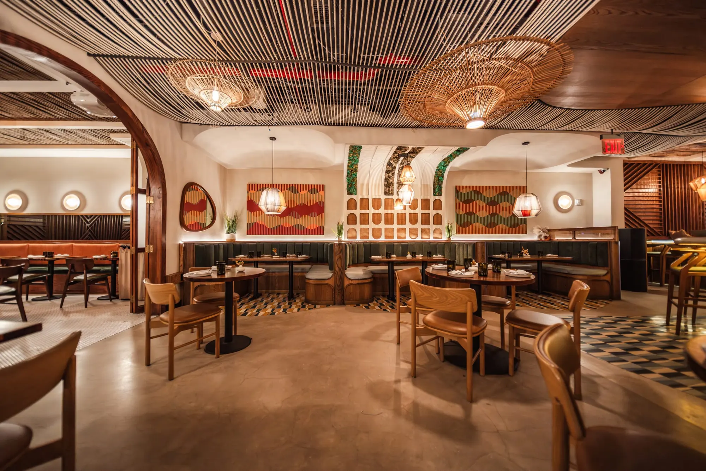
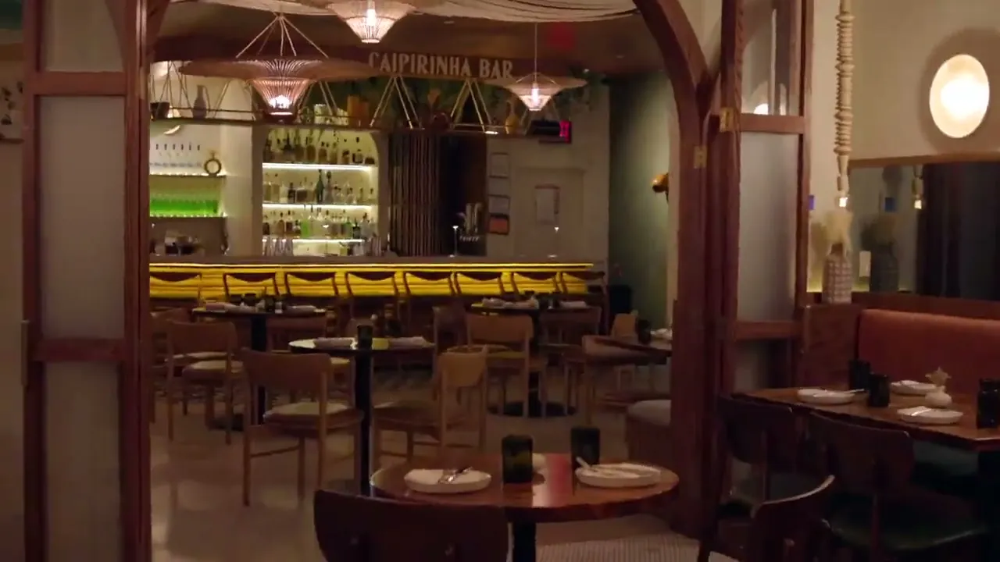
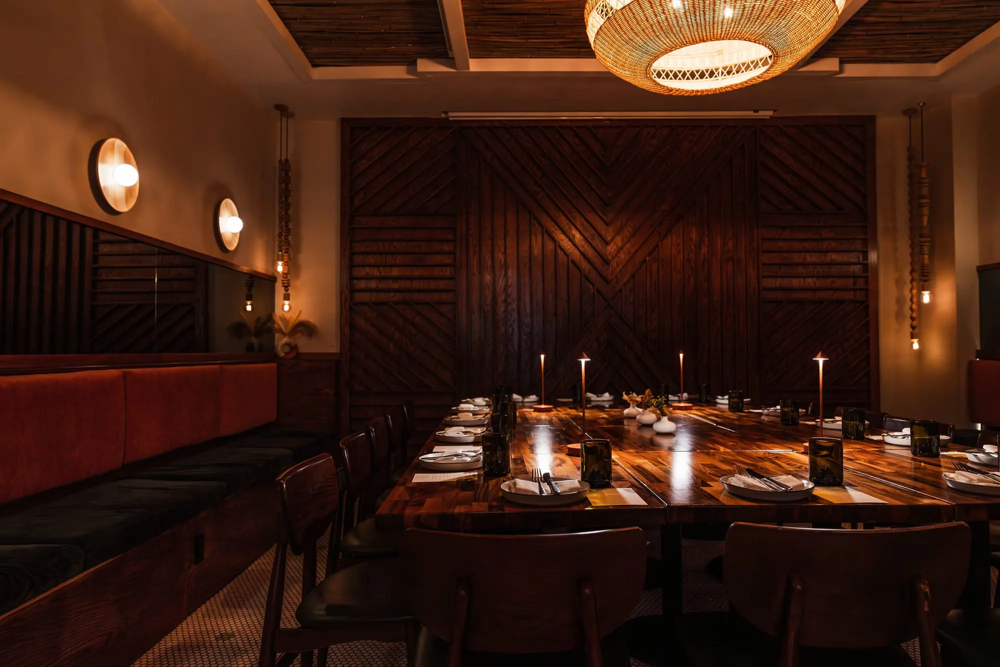
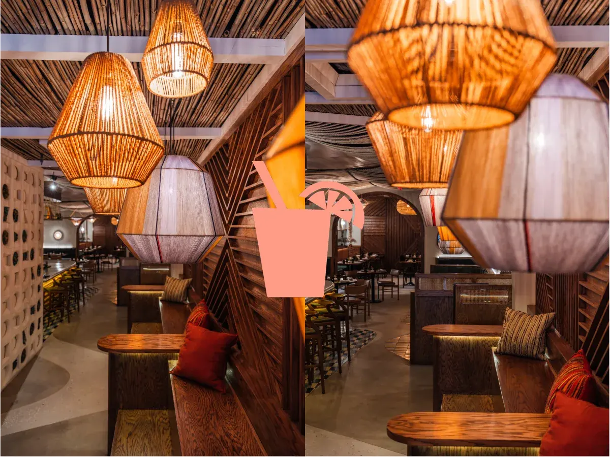
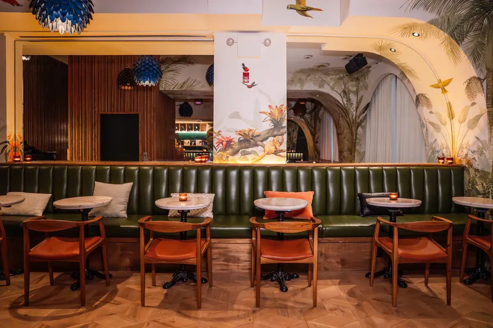
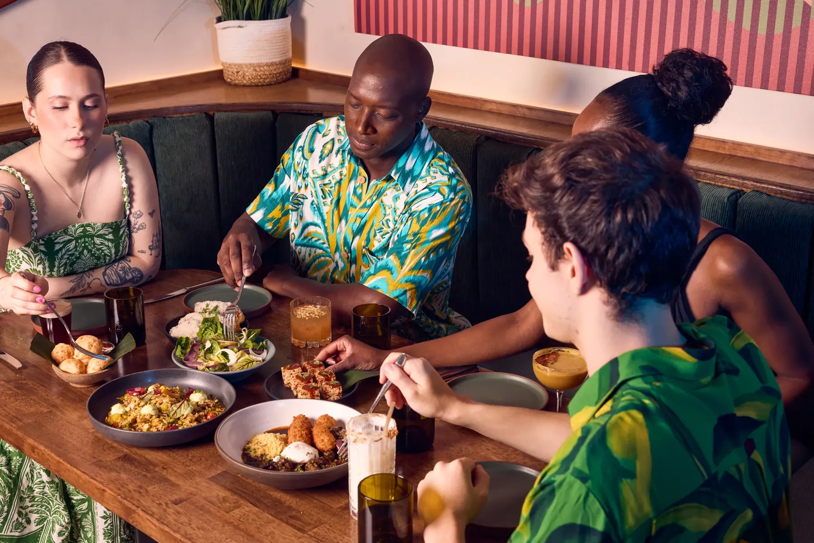

Eventos privados e catering
Sua festana nossa casa
De celebrações íntimas a andares inteiros, o Berimbau eleva sua experiência com hospitalidade brasileira, menus sob medida e um endereço único em Nova York.
Buscador de salas
Quantos convidados?
-

01
Primeiro andar inteiro
Flexibilidade para receber diferentes estilos de evento, com a opção de somar outras áreas em encontros maiores.
- Sentados
- 79
- Bar
- 12
- Em pé
- 125
-
02
Salão principal
O salão principal, com a opção de somar outras áreas conforme o tamanho do encontro.
- Sentados
- 45
- Bar
- 12
-

03
Sala privativa
Separada do salão principal, com luz e música totalmente personalizáveis e independentes do restante do restaurante.
- Sentados
- 34
-

04
Stadium Seating
Encontro descontraído ao lado do bar, com lugares sentados e em pé, e comida de rua brasileira servida volante ou em estação.
- Misto
- 20
-

05
Second Floor
Um refúgio sofisticado, de atmosfera íntima e imersiva, com eventos temáticos e DJ sets ao vivo.
- Sentados
- 40
- Bar
- 10
- Em pé
- 74
Maior do que uma sala? Os espaços podem ser combinados. Fale com a equipe.

Sabores da casa, experiência elevada
Um espaço para
Jantares corporativos · Networking · Aniversários e datas marcantes · Recepções de casamento · Brunches · Coquetéis · Lançamentos de produto

O que nossos clientes dizem
“The perfect place to celebrate our intimate wedding. From the very first contact, the Berimbau team was incredibly attentive and welcoming. They truly understood my vision and went above and beyond to accommodate special requests, including a wedding cake table and a customized menu.”
“Came here to celebrate my birthday with an amazing crew. This spot is fairly new and it did not disappoint. I do plan on coming back for brunch and their events. The food was amazing. We were served family style dinners.”
“This is hands down my favorite event space in the city. The flavors are authentic, the energy is always on point, and the ambience makes you feel like you're on a little getaway.”
Já receberam eventos aqui
Amazon · Anheuser-Busch · Banco do Brasil · Booking.com · Bradesco · Deloitte · Estée Lauder · Food & Wine · Globo · Google · Granado · Instituto Aya · Levain Bakery · Lincoln Center · NOM · PatBO · Paul Weiss · People Inc · PwC · Santander · Sol de Janeiro · World Climate Foundation